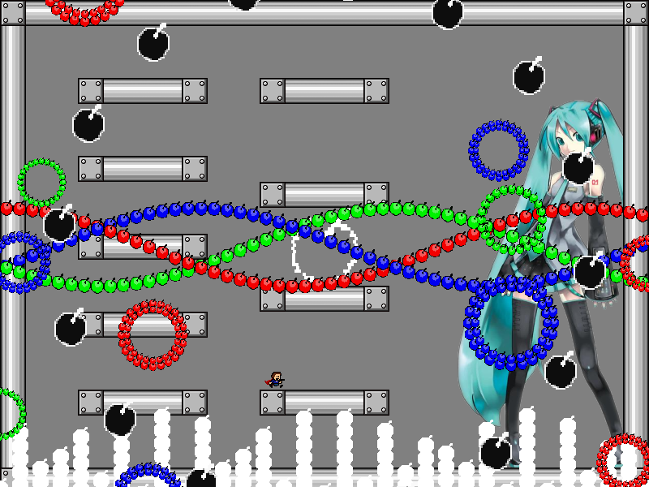
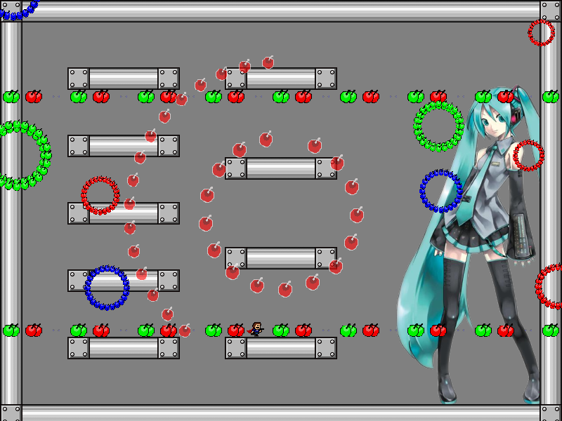
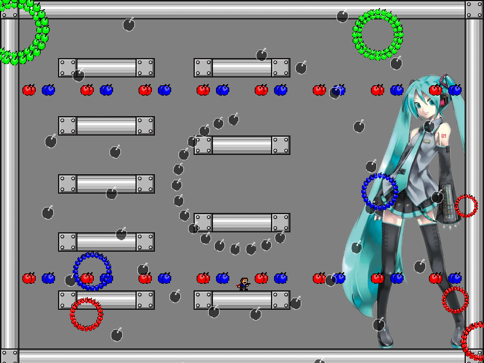

chapter2 - section2

| creator | segment | label | jump |
|---|---|---|---|
| NN | 0:18.90~0:20.70 | R*A*S/Q/Q | double |
2-1の解答に対応する、周期を題材とした択一型の弾幕です。
2-1において画面下部から周期的に生成されている円形弾幕に関して、これらは色ごとにそれぞれ異なる周期で半径が拡大・収縮を繰り返しています（fig.2-2.1）。
色ごとに決まった周期について、その長さの順番を見極めることを目的としています。

それぞれの円形弾幕の色と、半径が拡大・収縮する周期に関して、最も短い周期をもつ円形弾幕の色が1番目の正解の色、2番目に短い周期をもつ円形弾幕の色が2番目の正解の色、最も長い周期をもつ円形弾幕の色が3番目の正解の色にそれぞれ対応しています。
0:19.00~0:19.40、0:19.40~0:19.80、0:19.80~0:20.10において往来する棒状弾幕について、それぞれ1番目、2番目、3番目の正解の色に対応した列を通過することができます（fig.2-2.2.a~fig.2-2.2.c）。



なお、最も長い周期を基準に、2番目に長い周期はその1/2、最も短い周期はその1/3であり、それぞれの色に関して位相は共有しています。
また、画面中央を中心として生成される同心円状弾幕については当たり判定が存在しません。
正解となる色の順番を見極めた上で経路を選択する際、その開始地点となる列および回避に用いる列の候補を広く確保しておくことで攻略がしやすくなるかもしれません。